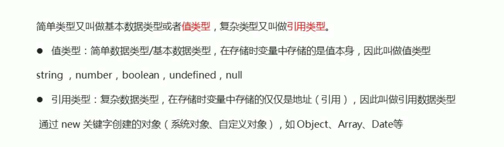

<1>.js的引入
基本上同css引入，但外部引入时，格式不同，其格式为 < script src="my.js"> </script > 其中间不能写任何代码
<2>js的输入输出语句
prompt(''),浏览器弹出输入框，用户可以输入，取过来的值是字符类型的
alert(''),浏览器弹出警示框，输出内容
console.log('')，浏览器控制台打印输出信息，用于程序员测试，在网页的控制台中能看到
想要输出多个变量，在括号里用逗号连接多个变量名即可
<3> 变量
a.本质：变量是程序在内存中申请的一块用来存放数据的空间。在使用时分为两大步：1.声明变量 2.赋值
1.声明变量。格式为 var 变量名；
2.赋值。变量名=值；
变量的初始化：声明变量的同时赋值
一个变量被重新赋值后，它原有的值就会被覆盖，变量值将以最后一次赋的值为准
同时声明多个变量时，只需要写一个var，多个变量名之间使用英文逗号隔开
b.js的变量数据类型是只有程序在运行过程中，根据等号右边的值来确定的，且js是动态语言，变量的数据类型是可以变化的
<4>.数字类型
a.数字型(number)
进制类型
b.字符串型string
其中的文本必须在单引号或者双引号中，如果文本中还要用到引号，则需和包含文本的引号区分开。字符串转义字符都是用\开头，但是这些转义字符都要写在引号里面;
检测获取字符串的长度 length，用法为在输出字符串时，在变量名后加一个.length
字符串拼接，输出字符时，多个字符串之间可以使用+进行拼接，其拼接方式为字符串+任何类型=拼接之后的新字符串，其中的字符串也可以是数字类型的，如果两个都是数字类型，则将进行运算，口诀数字相加，字符相连
字符串拼接加强，可以在输出的字符中间加入变量，使输出的内容可以随变量的值改变而改变，注意的是，别把变量名加在字符串的单引号的中间，否则的话，变量将以变量名的形式输出
c.布尔型
只有true和false两种类型。true代表1，false代表0
d.undefined和null
如果一个变量未赋值，那么它就是undefined，称为未定义数据类型，undefined和数字相加，最后的结果是NaN(not a number)
null和数字相加时就相当于0，和字符拼接时，输出的就为null
<5>.获取变量类型
在输出时加入 typeof 变量名 ，就可以知道变量的类型，如console.log(typeof 变量名)
<6>.数据类型转换
通俗的说，就是把一种数据类型的变量转换成另外一种数据类型
a.转换为字符串
把数字类型转换为字符串类型.
例如 var num=18； var str=num.toString();
再例如console.log(String(num));
再例如console.log(num+'');最后一种也叫隐式转换
b.转换为数字型
把其他类型转换为数字类型。
例如,var age=prompt();console.log(parseInt(age)).得到是整数，并且会把数据的单位去掉；
console.log(parseFloat(变量))，可以得到小数；
console.log(Number(str));
利用算数运算+ - * / 如 console.log('12'-0);
c.转换为布尔型
代表空 否定的值会被转换为false，如''0 NaN null undefined,所以转换的格式为 console.log(Boolean(0)),就是一个false值;如果其他的值的话就是true
<7>.算数运算符
a.运算符
就是+ - * /,还有%，就是取余的作用
b.表达式和返回值
表达式就是由数字，运算符，变量等组成的式子，采用右赋左的形式，返回值就是表达式运算后得到的值
c.递增和递减运算符
可以在变量前或后加++或--，表示自增1或自减1 ，称为前置递增(递减)运算符或后置递增(递减)运算符，且递增(递减)只能和变量配合使用，前置运算符先加1，后返回值，后置运算符先返回原值，后自加1
<8>.比较运算符
判断表达式是否成立，判断后返回布尔值，且判断式里会自动转换数据类型,相等用==，完全相等用===，前者只要求值相等，后者就必须要求值和数据类型完全一致才能返回true
<9>.逻辑运算符
逻辑运算符是用来进行布尔值运算的运算符，其返回值也是布尔值。后面开发中经常用于多个条件的判断。&&相当于与 and，||相当于或 or。！相当于非 not。逻辑与 && 两侧都为true，结果才是true 只要有一侧为false，结果就为false。逻辑或 || 两侧都为假，结果才是假，一侧为真，结果为真
a.短路运算
与 && 如果表达式1结果为真，则返回表达式二，如果表达式1结果为假，则返回表达式一，例如 console.log(123&&456),返回的是456
或 || 如果表达式一的值为真，则返回表达式一，如果表达式一的结果为假，则返回表达式二
<10>.赋值运算符
用来吧数据赋值给变量的运算符
=直接赋值，+=，-= 加减一个数后再赋值
*= /=、%=乘 除 取模一个数后再赋值
运算符优先级
一元运算符里的逻辑非优先级很高，逻辑与比逻辑或优先级高
<11>.流程控制
流程控制就是来控制我们的代码按照什么结构顺序来执行
a.分支结构
由上到下执行代码的过程中，根据不同的条件，执行不同的路径代码(执行代码多选一的过程)，从而得到不同的结果
1.if语句
语法结构
if (条件表达式) {执行语句一} else{执行语句二}
先判断括号里的条件表达式是否为真，为真就执行大括号里的语句，如果为假，则执行大括号外的语句;语句一和语句二最终只能有一个执行；else后不接（），直接接大括号
多分支语句
利用if else if
if (条件表达式1){ 语句一 }else if(条件表达式二){ 语句二 }else if(条件表达式三){ 语句三 }...else{ 以上都不满足后最终执行的语句 }
注意点：1.多分支语句还是多选一 最后只能有一个语句被执行 2.else if 里的条件可以无论多个 3.else if 中间有个空格
2.三元表达式
格式为 条件表达式？ 表达式1：表达式2；如果条件表达式结果为真，则返回表达式1的值，如果条件表达式的结果为假，则返回表达式二的值，既然要返回值，那么就要把表达式赋给变量，所以可以将格式写成 var 变量名=条件表达式？ 表达式1：表达式2，最后输出变量即可
3.switch语句
基于不同条件执行不同代码，针对一系列特定值的选项时，可以使用这个
格式为 switch(表达式){ case 值1: 执行语句一; break; case 值2: 执行语句二; break; ... default:都没有匹配上，执行最后的语句; }
注意事项：1.表达式里我们经常写成变量；2.表达式的值要和case里的值数据和类型都一致才能匹配成功
3.if else if和switch的区别
一般情况下，两者可以互换
swich...case 语句通常处理case为比较确定值的情况，而if else 语句更加灵活，常用于范围判断
switch语句进行条件判断后直接执行到程序的条件语句，效率更高，而if else 语句有几种条件，就得判断多少次
当分支比较少时，if else 语句的执行效率比switch语句高，当分支比较多时，switch语句的执行效率比较高，而且结构更清晰
b.循环结构
可以重复执行某些语句或代码，一组被重复执行的语句被称为循环体，能否继续重复执行，取决于循环的终止条件
1.for
for 重复执行某些代码，通常跟计数有关系
结构如下 for(初始化变量;条件表达式;操作表达式){循环体}，初始化变量就是用var声明的一个普通变量，通常作为计数器使用；条件表达式就是用来决定每一次循环是否都继续执行，就是终止的条件；操作表达式是每次循环最后执行的代码经常用于我们计数器变量进行更新(递增或递减)，判断条件表达式后，若符合，则先执行循环体，然后再进行操作表达式；若不符合，直接终止循环
断点调试
for 循环执行不同的代码
因为有计数器变量i的存在 ，所以可以执行不同的代码，再嵌套if else
for 在一行中连续打印字符
先给变量赋一个字符值，然后在循环中连续追加字符，比如，var str='',...,str=str+'字符'
2.双重for循环
也叫循环嵌套，指子在一个循环语句中再定义一个循环语句的语法结构，例如在for循环语句中，可以再嵌套一个for循环，这样的for循环语句我们称之为双重for循环，格式如下 for(外层的初始化变量; 外层的条件表达式; 外层的操作表达式){for(里层的初始化变量; 里层的条件表达式; 里层的操作表达式){执行语句;}}
外层循环一次，里面的循环全部执行
3.while语句
结构如下，while(条件表达式){循环语句}
条件表达式结果为真，执行循环体，条件表达式结果为假，退出 循环
4.do while循环
格式为 do {循环体} while{条件表达式}
do while 先执行一次循环体 在判断条件 如果条件表达式结果为真，则继续执行代码，否则退出循环，所以do while 至少执行一次
循环小结
循环结构 for, while, do while, 三个循环多数情况下可以相互替代使用，如果用来计次数，跟数字相关的，三者使用基本相同，但我们更喜欢用for；
和 do while 可以做跟复杂的判断条件，比for 更灵活一些；
while 和do while 有区别，前者先判断后执行，后者先执行一次，然后再判断执行
5.continue和break
continue关键字用于立即跳出本次循环，继续下一次循环(本次循环体中continue之后的代码就会少执行一次，比如循环语句中有if语句，if语句中有continue，当if判断为真，则执行continue，if后面的，也就是for的循环体就不会执行，直接跳到下一次循环)
break关键字用于立即跳出整个循环(循环结束)
<12>.数组
数组(Array)是指一组数据的集合，其中的每个数据被称作元素，在数组中可以存放任意类型的元素，数组是一种将一组数据存储在单个变量名下的优雅方式
利用new创建数组 var arr = new Array();
利用数组字面量创建数组 var arr = [];数组内可以放任意类型的数据；数组内的数据一定要用逗号(,)分隔开
1.数组的索引
索引(下标)：用来访问数组元素的序号(数组下标从0开始)
访问(获取得到)数组元素 格式 数组名[索引号]
2.遍历数组
是指将数组的元素从头到尾访问一次，可以利用for循环，将数组里面的元素全部输出
数组长度
数组长度可以用arr.length来测量；数组的长度是元素个数，不要跟索引号混淆；arr.length动态监测数组元素的个数
3.数组新增元素
通过修改length长度新增数组元素，新增的元素是undefined
通过修改数组索引新增数组元素，比如一个数组在有三个元素，我们可以加上一个arr[3] = '变量名';来向数组追加第四个元素；如果arr后的括号里是已有元素的索引号，那么arr后的变量将替换原来的变量，但注意不要直接给数组名赋值，否则里面的数组元素都没有了
筛选数组方法1：通过for循环，再通过一个新的变量来将筛选出来的元素按顺序排入新数组中；方法二：将上个方法的变量换成新数组的长度(newarr.length)，效果一样
4.数组排列
将原数组按一定的顺序进行排列
将要排列的数组分为两部分，一部分是数组里的元素一共要比较几次，比如五个元素就要进行四次的单个元素的大比较，一部分是每个元素要和其他元素交换几次，
<13>.函数
函数就是封装了一段可以被重复调用执行的代码块。通过此代码块可以实现大量代码的重复使用。
1.函数的声明
格式如下：function 函数名(){}
function声明函数的关键字，全部小写
函数是做某件事，函数名一般是动词
函数不调用，自己不执行
2.函数的调用
格式如下 函数名() 调用函数的时候千万不要忘记加小括号
3.函数的封装
函数的封装是把一个或者多个功能通过函数的方式封装起来，对外只提供一个简单的函数接口，格式为 function 函数名 () {},后面要调用直接用以下格式 函数名 ();
4.函数的参数
上述函数名后的括号里的元素即为参数，function后面的叫形参(形式上的参数)，当时并不知道是什么，调用时的参数叫做实参(实际上的参数)，实参再传递给形参，函数的参数可以有，也可以没有，个数不限。
参数的作用：在函数内部某些值不确定固定，我们可以通过参数在调用函数时传递不同的值进去
多个参数之间用逗号(,)隔开
形参可以看作是不声明的变量
函数形参和实参个数匹配问题
如果实参的个数和形参的个数一致，则正常输出结果
如果实参的个数多于新参的个数，会取到形参的个数，多的实参将不管
如果实参的个数少于形参的个数，则会输出NaN，因为形参可以看作一个未赋值的变量，则将其用于运算中，它就会显示Undefined,一个数加上undefined，就是NaN
5.函数的返回值
运用return语句，格式如下 function 函数名 () {.... return 需要返回的结果}
函数的功能只是实现某种功能，最终的结果需要返回给函数的调用者
只要函数遇到return 就把后面的结果返回给函数的调用者,在实际开发里，我们经常用一个变量来接受函数的返回值，使用更简单
return会终止函数，也就是位于同一级的在return后面的语句不会被执行
return只会输出一个结果，以最后一个值为准，如果要输出多个结果，则可结合数组来输出多个值，但返回的值是数组
我们的函数如果有return，则返回的是return后面的值，如果函数没有return，则返回undefined
break，continue，return的区别

6.arguments的使用
arguments实际上它是当前函数的一个内置对象，所有的函数都内置了一个arguments对象，对arguments对象中存储了传递的所有实参，arguments展示形式是一个伪数组，因此可以进行遍历
伪数组的特征：1.具有length属性；2.按索引方式储存数据；3.不具有数组的push，pop等方法
7.函数的两种声明方式
利用函数关键字自定义函数(命名函数)，如getMax,getSum
函数表达式（匿名函数），格式如下 var 变量名 = function() {},后面调用格式为 变量名();注意，是变量名，不是函数名;函数表达式声明方式跟变量差不多，只不过变量里的是值，而函数表达式里面存的是函数;函数表达式也可以传递变量
<14>.JavaScript作用域
1.作用域
JavaScript作用域就是代码名字(变量)在某个范围内起作用和效果，目的是为了提高程序的可靠性，更重要的是减少命名冲突，不在同一个作用域下，相同的两个变量名不会起冲突
两种作用域：全局作用域、局部作用域
全局作用域：整个script标签或者一个单独的JS文件
局部作用域：在函数内部就是局部作用域，也就是说，这个代码的名字只在函数内部起效果和作用
2.变量作用域
全局变量：在全局作用域中用var声明的变量，在函数内部没有声明直接赋值的变量
局部变量：在局部作用域中声明的变量，或者在函数内部的变量,或者函数的形参也可以看作局部变量
作用效率
全局变量只有在浏览器关闭的时候会销毁，比较占内部内存资源；局部变量当我们程序执行完毕就会销毁，比较节约内存资源
js没有块级作用域es6的时候才有
3.作用域链
内部函数可以访问外部函数里的变量，采用链式查找的方式，决定取哪个变量，一层一层往外找距离最近的变量
<15>.JavaScript预解析
1.js引擎运行js分为两步：预解析 代码执行
(1).预解析：js引擎会把js里面所有的var还有function提升到当前作用域的最前面
(2).代码执行：按照代码书写的顺序从上往下执行
2.预解析分为变量预解析(变量提升)和函数预解析(函数提升)
(1)变量提升：就是把所有的变量声明提升到当前的作用域的最前面，不提升赋值操作
函数提升：就是把所有的函数声明提升到作用域的最前面，不调用函数，所以函数表达式调用必须写在函数表达式的下面
<16>.JavaScript对象
1.对象
对象是一组无序的相关属性和方法的集合，所有的事物都是对象
属性：事物的特征，在对象中有属性来表示(常用名词)
方法：事物的行为，在对象中用方法来表示(常用动词)
好处：使对象表达结构更清晰，更强大
2.创建对象
1.利用字面量创建对象
2.利用new Object创建对象
3.利用构造函数创建对象
字面量创建对象
格式为 var obj = { 属性名：值， 属性名：'字符串'， 方法名：function(){} }
使用对象
调用对象的属性
调用对象的属性，我们采取对象名.属性名在，这个.我们理解为 的
还有一种调用方法 对象名['属性名']
调用对象的方法
对象名.方法名()
3.变量、属性、函数、方法的区别
变量和属性的相同点：他们都是用来储存数据的
不同点：变量单独声明并赋值，使用的时候直接写变量名，单独存在；属性：在对象里面的不需要声明的，使用的时候必须是对象.属性
函数和方法的相同点：都是实现某种功能，做某件事
函数使单独声明并且调用的 函数名() 单独存在
方法：在对象里面调用的时候 对象.方法()
利用new Object创建对象
格式为 var obj = new Object(); 然后通过obj.属性名=值；的方法来给对象追加属性；通过obj.方法名=function(){}的方法来给对象追加方法
利用构造函数创建对象
某些对象大部分的属性和方法相同，只有一小部分不同，所有我们可以利用函数将相同的部分重复，我们就把这个函数称为构造函数
格式为 function 构造函数名(){ this.属性=值； this.方法=function(){} } new 构造函数名();
注意：1.构造函数名字首字母要大写；2.构造函数不需要return就可以返回结果；3.我们调用构造函数必须使用new；4.我们只要new Star()调用函数就创建一个对象；5.我们的属性和方法前面必须添加 this
例子：function Star(name,age,sex) { this.name(变量)=name(形参); this.age(变量)=age(形参); this.sex(变量)=sex(形参); } new Star('ldh',18,'男');
函数里只是一些相同的变量，变量的值还需要后面调用时输入的实参
new关键字的执行过程
1.new构造函数可以在内存中创建了一个空的对象；2.this就会指向刚才创建的空对象；3.执行构造函数里的代码，给这个空对象添加属性和方法；4.返回这个对象
遍历对象
利用 for in 循环格式如下 for(变量 in 对象)，其中的变量可以是任何变量，但习惯写k。变量得到的是属性名，要想得到值，则该对象名[k]
<17>.JavaScript内置对象
内置对象就是指js语言自带的一些对象，这些对象供开发者使用，并提供了一些常用的或是最基本的而必要的功能(属性和方法)
1.Math对象
不是一个构造函数，所以我们不需要new来调用，而是直接使用里面的属性和方法即可。具体的属性和方法有很多，可在MDN里面查询
2.Date对象
Date是个构造函数，必须使用new来调用我们创建的日期对象
使用Date，如果没有参数，则返回当前系统的时间，格式为 var 变量名= new Date();
参数常用的写法，数字型2021，10，05，或者是字符串型'2021-10-5 22：22：22'
获取毫秒数
倒计时
先计算规定时间和现在时间的差的总毫秒数，再利用以下公式转化为天 小时 分钟 秒
然后再用以下代码
3.数组对象
检测是否为数组
1.instanceof 运算符，它可以用来检测是否为数组，若为则返回true，若不是则返回false
2.Array.isArray(参数)，若为则返回true，若不是则返回false
添加或删除数组元素
1.push()在数组末尾添加一个或多个元素，参数直接写数组元素就可以了，push完毕之后，如输出console.log(arr.push())返回的结果是新数组的长度
2.unshift 在数组开头添加一个或多个数组元素，参数直接写数组元素就可以了,unshift完毕之后，如输出console.log(arr.unshift())返回的结果是新数组的长度
3.pop() 它可以删除数组最后一个元素，一次只能删除一个元素。不用写参数，直接删除最后一个元素，pop完毕之后，如输出console.log(arr.pop())，返回的结果是删除的那个元素
4.shift() 删除数组的第一个元素，其他如上
4.颠倒数组
直接用数组名.reverse
5.数组冒泡排序
直接用数组名.sort，但是不能用于双位数，要用于双位数，则需在sort后面加上(function(a,b){return a-b;})(这是升序排列，如果想要降序排列，则return b-a;)
6.获取数组元素索引
用indexOf()，括号里加想要知道序列号的元素，如果有多个相同的元素，只返回第一个元素的索引号，如果数组里没有该元素，则返回-1
数组去重案例
核心算法就是遍历旧数组，再将旧数组的元素拿去和新数组里的元素比较，如果没有则存入新数组，如果有则不存入，代码为
7.数组转换为字符串
1.直接利用toString(数组名)，将数组转换为字符
2.用join(),括号里可添加数组元素转换为字符后，元素之间的符号，但符号要加括号，如join('-'),join('&')
8.基本包装类型
就是把基本数据类型包装成了复杂数据类型，这样基本数据类型就有了属性和方法分为三步:1.把简单数据类型转化为复杂数据类型；2.将复杂数据类型赋给一个临时变量；3.待临时变量运用后，删除临时变量
9.字符串的不可变
指的是里面的值不可变，虽然看上去可以改变内容，但其实是地址变了，内存中开辟了一个新的内存空间，原来的并没有删除
10.根据字符返回位置
字符串对象可以根据字符返回位置，str.indexOf('要查找的字符'，[起始的位置])，相当于把字符串当作一个数组来处理，返回的是从查找位置开始第一个要查找的字符所对应的索引号，如果不写起始位置默认为第一个，lastOf也是一样的用法，只是从后面往前查找
10.根据位置返回字符
1.charAt(index)，返回指定位置的字符(index字符串的索引号)，格式为str.charAt(0)
2.charCodeAt(index)，返回指定位置处字符的ASCⅡ码,格式为str.charCodeAt(0),目的：用于判断用户按下了那个键
str[index]获取指定位置处字符，格式为str[0]
案例：统计出现次数最多的字符
首先我们要得到字符串里有哪些字符和它们相应的出现次数，这时其实数组和对象都能用，但对象可以把字符和次数匹配，所以我们选择对象；
我们可以通过对象名['属性名']来判断对象中是否含有该属性，若存在，则返回true，不存在则返回undefined
那我们就可以通过循环，依次来读入字符串的字符，第一次出现就赋值为1，再次出现就自增，就可以得到一个对象里面存储着字符和对应出现的次数
利用for in 循环来比较次数的大小，并把最大的次数对应的属性名赋给一个变量来输出
代码如下
11.字符串操作方法
其他方法：1.替换字符replace('被替换的字符','替换的字符')，只会替换第一个字符：2.字符转换为数组solit("分隔符")，把字符串转换成数组，括号里的分隔符指的是字符串里字符之间的符号
18.JavaScrip简单类型与复杂类型

堆和栈：系统分配的两个存储空间
栈一般存储简单数据类型，在栈里开辟一个空间，存放简单数据的值。堆一般存储复杂数据类型，复杂数据类型在栈里存放地址(指向堆)，在堆里存放数据
简单类型传参：将实参的值复制了一份给形参，形参在函数中改变不会影响实参
复杂类型传参：将实参的地址复制给了形参，形参改变会导致实参改变
19.Web APIs
19.1.Web APIs和JS基础关联性
19.2.API和WebAPI
API是一些预先定义的函数，目的是提供应用程序与开发人员基于某软件或硬件得以访问一组例程的能力，而又无需访问源码，或理解内部工作机制的细节，简单的说，API是给程序员提供的一种工具，以便能更轻松的实现想要完成的功能
Web API是浏览器功能和页面元素的API(BOM和DOM)
19.3.DOM
19.4.获取页面元素
根据ID获取：getElementById(),()里接'id名'
根据标签名获取：使用getElementsByTagName(),()里接'标签名'，获取来的元素对象的集合以伪数组的形式存储，获取得到的父元素不能直接拿来获取子元素，因为得到的父元素是数组，要用要指明是数组中的第几个
根据类名获取元素：使用getElementByClassName('类名')，返回拥有该类名的所有元素
querySelector(),返回指定选择器的第一个元素对象('.类名')或('#id名')
querySelectorAll(),返回指定选择器的所有元素
获取特殊元素(body html),获取body元素doucument.body;获取html元素：doucument.doucumentElement
19.5.事件基础
事件是由三部分组成 事件源 事件类型 事件处理程序
事件源：事件被触发的对象，也就是谁被触发了
事件类型：如何触发，触发的方式，如鼠标点击，鼠标经过等等
事件处理程序：通过一个函数赋值的方式来完成
19.6.操作元素
改变元素内容：innerText和innerHTML 前者会去除掉html标签，同时空格和换行也会去掉，后者包括html标签，同时保留空格和换行
修改元素属性：采用 变量名.属性 的方法来进行修改
表单元素的属性操作：如果想修改表单里的内容，要用value而不是innerText和innerHTML
修改样式属性，如果修改元素少，直接使用 变量名.style.要修改的属性 如果要修改的属性多，可采用 变量名.className 来换个类名
19.7.自定义属性
获取属性：一般方法是 element.属性 的方法：还有一种是element.getAttribute('属性')；还有一种是 element.dataset.设置的属性名 第一个是获取内置属性值，第二个主要获得自定义的属性(标准)，也就是我们程序员自定义的属性(我们为了使用方便自己创造的一些属性)，第三个用来获取自定义属性，如果后不接属性名，则得到的是该元素所有自定义属性的一个数组
设置自定义属性：一般方法 element.属性='值' 承接上文的另一种方法 element.setAttribute('属性'，'值')，如果要用第二种方法更改类名时，修改的属性是class 而不是classname
移除属性：element.removeAttribute('属性')
当我们要设置自定义属性时，属性的名字应该以data开头，这是一个标准
19.7.一些应用实例
表单：获取表单input里的文字长度时要加上.length；表单的一些属性：type value disabled
排他思想：给某个元素加属性前先把其他元素的属性全部消掉
换肤效果：注意换肤的元素改变图片地址的格式
介绍页面切换效果：要先给介绍标题加个自定义属性，以便后面通过点击某个介绍标题，切换到相应的介绍时，知道该是哪个详细介绍显示出来
创建的元素只能用一次，要用的话需要再次创建
动态生成表格案例：第一步，先把表格内每一行的数据创建成一个对象，再把这些对象放到数组里面；第二步根据数组内的对象个数创建行；第三步，在上一步的for循环里根据对象里的属性个数来创建单元格，获得对象里的属性用 k in obj,得到的是属性名；第四步，获得对象里的数据并把它给单元格，用obj[k] ，得到数据；第五步，创建删除单元格，在以上步骤后面进行，先生成单元格，并把 删除 赋给单元格；第六步，给删除加代码，使之能删除所在行,利用node.removeChild(),node为所删除元素的最近一级父元素，所以node为tbody 然后因为我们是给删除加的代码，所以括号里为this.parentNode.parentNode
19.8.节点操作
一般地，节点至少拥有nodeTupe(节点类型)，nodeName(节点名称)，nodeValue(节点值)这三个属性
节点层级：一般是父兄子层级关系
获取一个元素的父级元素，使用 element.parentNode 得到的是离element最近的父级元素
获取一个元素的子节点，使用 element.childNodes 但返回的是所有的子节点，包括元素节点，文本节点等等,我们可以采用另一种方法来只获取元素的子元素节点 element.children,在此基础上，还有 firstchild lastchild,返回第一(最后)个子节点，不管是文本节点还是元素节点，firstElementChild lastElementChild,返回的是第一(最后)个子元素节点，但是这两个有兼容性问题，所以我们一般用children返回的伪数组来选出想要的那个元素
获取一个元素的兄弟节点，使用element.nextSibling previousSibling,得到的包括文本节点 元素节点等等 ,还有nextElementSibling previousElementSibling,方法同上，但目前没有能直接获得兄弟元素节点的方法，所以我们需要自己封装一个函数，如下

创建节点：document.createElement(''),括号里接要生成的元素；添加节点：只创建节点是不够的，我们还需要把它添加到页面中某个具体的位置上去，这时用 node.appendChild()，括号里接创建的元素，这个添加是添加到node的末尾，也可以用node.insertBefore(child,指定元素)，表示在指定元素的前面添加一个元素
删除节点：使用 node.removeChild() 表示删除父节点中的一个子节点
复制节点：使用 node.clonenode() 括号里为true 或false 前者为深复制，既复制标签又复制内容，后者只复制标签，而且这个只是复制，我们还需要添加
三种创建元素方式区别
19.9.事件高级
1.传统注册方式：利用on开头的事件，如onclick；2.特点：注册事件的唯一性，同一个元素同一个事件只能设置一个处理函数，最后注册的注册的处理函数会覆盖前面注册的处理函数
事件监听方式：eventTarget.addEventListener(type,listenner[,useCapture]),将指定的监听器注册到eventTarget(目标对象)上，当该对象触发指定的事件时，，就会执行事件处理函数。type：事件类型字符串，要加引号，比如click，mouseover，注意这里不要带on；listener：事件处理函数，事件发生时，会调用该监听函数；useCapture：可选参数，是一个布尔值，默认是false；同一个元素，同一个事件可以添加多个侦听器，按顺序执行
删除事件(事件解绑)：1.传统方式：element.事件=null；2.利用removeEventListener('事件'，函数名)
19.10.DOM事件流
事件流描述的是从页面中接收事件的顺序，事件发生时会在元素节点之间按照特定的顺序传播，这个传播过程即DOM事件流